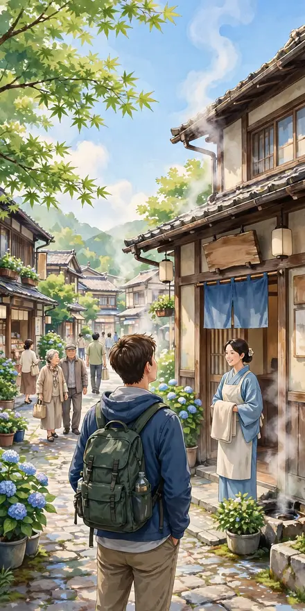
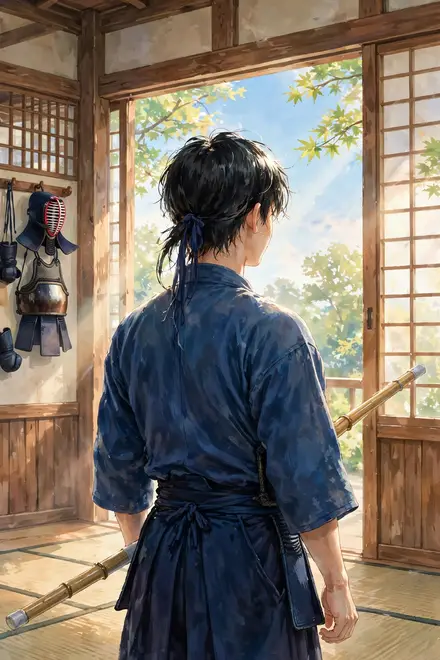
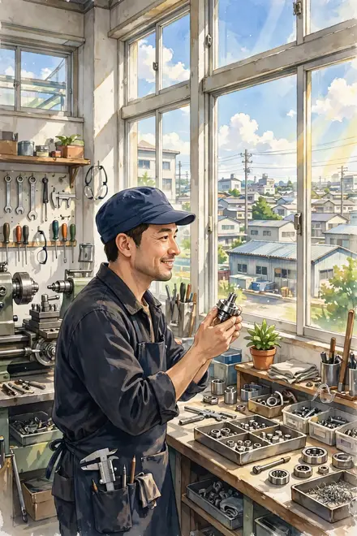
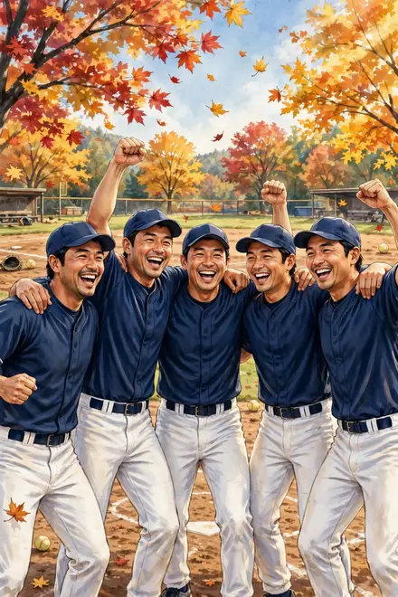
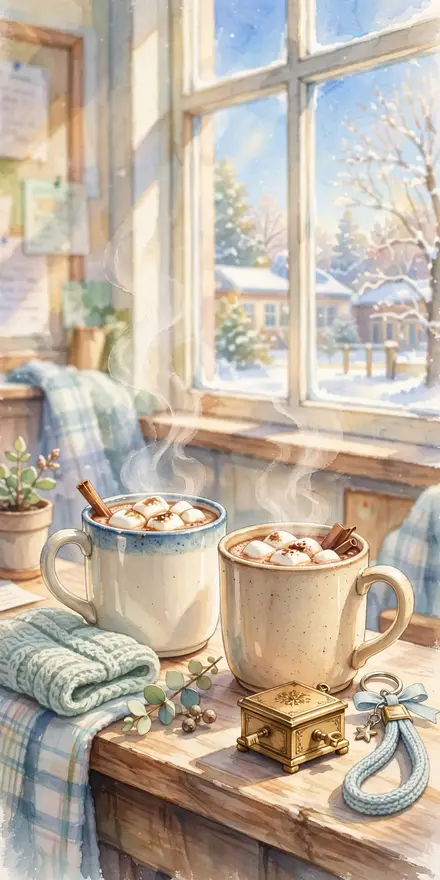

解剖医？五十嵐俊介シリーズ
解剖医？五十嵐俊介シリーズ解剖医？五十嵐俊介シリーズ
解剖台の前では「神の解剖」と呼ばれる天才法医解剖医・五十嵐俊介。普段は人員補充の愚痴とコンカフェ通いが日課の、ええ加減で適当な男。彼のもとへ運ばれてくる死者たちの物語。
TSUYOPON BUNKO
著・つよぽん。
身の回りの出来事や想像から生まれた物語を、本棚に並べました。
どの作品も、ここで最後まで読めます。
読んでくださって、ありがとうございます
どの作品でも、一言でも構いません。感想はフォームから送れます。届いた感想は、下の「読者の声」で紹介します。
解剖医？五十嵐俊介シリーズ解剖台の前では「神の解剖」と呼ばれる天才法医解剖医・五十嵐俊介。普段は人員補充の愚痴とコンカフェ通いが日課の、ええ加減で適当な男。彼のもとへ運ばれてくる死者たちの物語。
 名前のない手紙
名前のない手紙ドナー登録は、好きな子にいい顔をしたかったから。骨髄バンクから適合通知が届いても、河合悠斗（24）は封筒を三週間開けられなかった。逃げ道を残しながらサインした先で始まる、顔も名前も知らない相手との手紙のやりとり。署名は、いつも黒く塗られている。
第一章「封筒」から、第九章「柿」まで
読了 約15分
 夢買います
夢買います出張先のさびれた商店街で、会社員・明石秀夫は「夢買います」という看板の店を見つける。人の夢を金で買い取る店。自分の15年物の夢に値段がついた時、秀夫は――。
第一章「看板」から、第九章「帰り道」まで
読了 約10分

二番目から始まる恋 救助は来ない
救助は来ない遭難した男たちのもとに、救助は来ない。生き延びるには、自分たちの力で動くしかない。極限の状況で、男たちは何を守り、何を捨てるのか。
第一章「横転」から、第九章「三十日目の朝」まで
読了 約20分
近未来。ある技術が変えた世界で、男と女は「二度目のはじめまして」を交わす。初めて会ったはずなのに、どこか懐かしい。その理由とは――。
第一章「灰色の時計」から、第六章「二度目の四月」まで
読了 約10分
 傘のなかの春
傘のなかの春
遅咲きの剣剣道部の落ちこぼれと呼ばれた青年がいた。彼に残されていたのは、誰も正解と言わない、型破りな技ひとつだけだった。笑う者たちの中で、彼の全てを懸けた挑戦が始まる。
第一章「気合の声」から、第七章「託すもの」まで
読了 約20分
 ヒマワリの夏、君の横顔
ヒマワリの夏、君の横顔ヒマワリの咲く夏の町。マサヤとミクの、どこか噛み合わない時間が流れていく。あの夏に隠された秘密とは――。
前編「繰り返す夏」から、後編「父の死ぬはずだった未来の影」まで
読了 約15分
 美しく咲く
美しく咲くロト6で六億円を当てた恋人イサムと、保険の査定係として「大金で変わっていく人」を何人も見てきた美咲。誰にも言うな、と口止めした彼女の前に、元質屋の祖父の影が差す。缶コーヒー二本と、前の腕時計と、金木犀の木が結ぶ長編。
第一章「六つの数字」から、第七章「美しく咲く」まで
読了 約20分

鉄の匂いのする街で夕方6時、FAXで届いた30年前の図面。製図者欄にあったのは、25年前に亡くなった父の字だった。五社に断られた特注部品を、72歳の鋳物屋と75歳の木型屋とともに蘇らせる、東大阪の職人の物語。
第一章「FAXの音」から、第七章「三十年目の音」まで
読了 約10分

連覇の秋
ホットココアと、鳴らないオルゴール山あいの町、終バスは午後6時40分。家に誰もいない野球部の少年と、完璧でいなければならない吹奏楽部の少女。鳴らないオルゴールと、いつも二本買うホットココアをめぐる短編。
鳴らなくても、大事なものは大事
読了 約5分
「面白かったです！次回作…楽しみにしてます！」